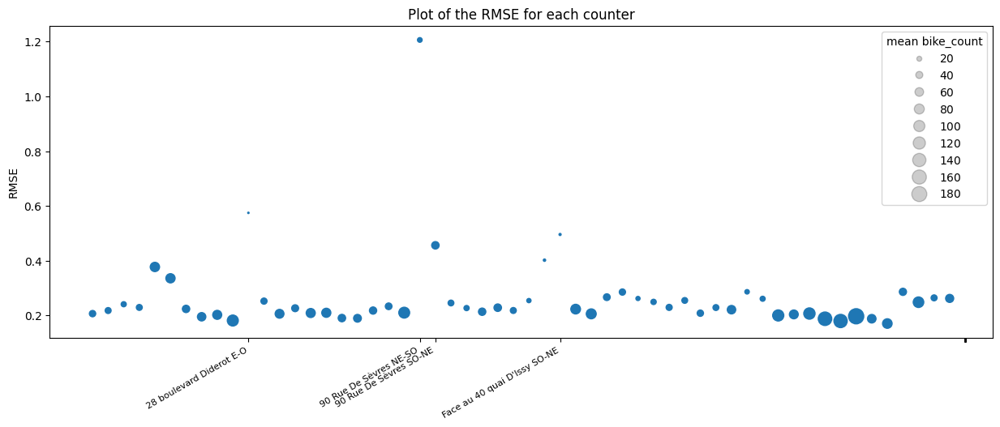

We were given two datasets for this project, a train set and a test set. We train our model on the training set and then test our model on the test set. The variable we are trying to predict is bike_count which is the number of bike counts at a specific time and at a specific counter in Paris.
A first look at the data
We first see that there are:
We note that the target variable is highly skewed and takes a large range of values, hence we will take the log of bike count instead from now on.
With only 9 predictors: the date, the counter name, the site name, the site id, the counter id, the installation date of the counter, the latitute and longitute of the counter, we already "feel" that the information provided will be insufficient to predict the bike count accurately. Hence, we look for additional data/information that could help us predict the bike count.
Data preparation
Because we want to add data that will be useful for predictiong the target variable, we must ask ourselves what factors look useful to predict bike count in Paris.
Why do people take their bycicle?
What factors might influence their decision to take the bike?
Therefore, we look for an external data set that has information about the weather in Paris for every hours and we create a boolean True/False, that indicates if we are in holidays, bank holidays and in quarantine.
Also, we transform the hours and months into cyclical encoding to prevent our model to interpret December (encoded 12) and January (encoded 1) as being further from each other than January (1) and February (2).
After getting a complete weather dataset (more than 40 variables), we need to clean it. We first check for patterns in the distribution of missing values. We found none and we decided that all the variables that had more than 10% missing values would be discarded as it would have required too much work to clean them. The variables with less than 10% missing values were filled using linear interpolation (method linear for continuous variables and method padding for factors).
Finally, many plots were produced to explore relationships between the different predictor variables and the target variable (log bike count). Below are some examples of interesting plots.
We see on these two plots that the predictors quarantine1 and t(K) which are respectively a boolean 0/1 that says if we are in the first quarantine period (October 2020) and the temperature in Kelvin should be useful to predict bike counts. We see that the log of bike counts is much higher when we are not in quarantine than when we are in quarantine and the that there is a positive correlation between the temperature and the number of bike counts.
We notice in the above plots that there are a fews "drops" in the value of bike counts that is common to all counters, these corresponds to holidays. One drop is more important than others, and occurs during the Christmas holidays. We therefore create a specific boolean variable to capture this phenomena.
Model selection
Different machine learning algorithms were tried as well as different combinations of predictors. To avoid overfitting we used cross validation times series split . With this method, we can use classical cross validation and make sure that we train our model and counts that were observed before those use to test our model. The disadvantage, is that we can either have the training set size be different for each fold which is not ideal for hyper-parameter tuning (current figure), or have constant sized small training set which is also not ideal given the data periodicity. This explains that generally we will have worse cross-validation scores than test scores.

Ridge regression was the first model tried out. It was completely outperformed by Decision Tree (DT) models :
Random-Forest and XGBoost. This was expected as these models can model non-linearity, take into account
interactions between different predictors and handle co-linearity better than linear regression (LR), while
benefiting from mechanism that prevent overfitting. DT based algorithms are also better suited for categorical predictors then LR. The boosting algorithms outperformed RandomForest. This is probably because
boosting algorithms focus on reducing an objective function (in this case RMSE which is the error function used to evaluate the model). A small MLP (hidden layers= [8,4]) was also tried out, but it was
outperformed by the DT-algorithms.
Finally, CatBoost was also tried out and it outperformed the other models (expected as CatBoost outperforms XGBoost on
most benchmarks and is specifically designed to handle categorical variables). The final model uses CatBoost. Once the algorithm chosen, we tried to leave out some
external features to check if they were necessary in the model. We obtained the best score by keeping
all our selected features. A minor drawback of the boosting algorithms is an increase in training time.
Model Evaluation

We now analyse the accuracy of our model. From the above plot, we see that the model performs well on all
the counters except one: counter ”90 Rue De S`evres NE-SO”. We note from the plot below that the model gives
poor predictions overall in late August but that it is very accurate over the rest of the period. The counter ”90 Rue De S`evres NE-SO” is the only counter with very low counts in
September.
The reason for this could be:
Finally, we note that our model has more accurate predictions for counters with high counts which is a consequence of the squared errors in the objective function.

How could we go futher?
Here is a non exhaustive list of some ideas we have to improve our model:Link to the github of the project
(soon) bike traffic github